Visual reference for the 9 sample scenarios in §10 Appendix — Sample renderings of the zone-migration design doc, plus a country-clipping demo at El Paso for §5.4. Each row shows how the zones were generated (left), the rendered polygons over a real map (right), and per-zone H3 cell counts at the three compaction levels airports-msvc actually uses.
One res-9 H3 tile centered on a hotel near LAX. This is the canonical mapping for hotels and train stations per §4 of the design doc — the zone owns exactly one tile, and any per-vehicle differences in fee / free-delivery / key-handoff become separate DeliveryZoneSettings rows under that single zone.
| Zone | res-9 | edge-aware (res 5–9) | full (res 5) | clipped-out |
|---|---|---|---|---|
| Hyatt Regency LAX | 1 | 1 | 1 | — |
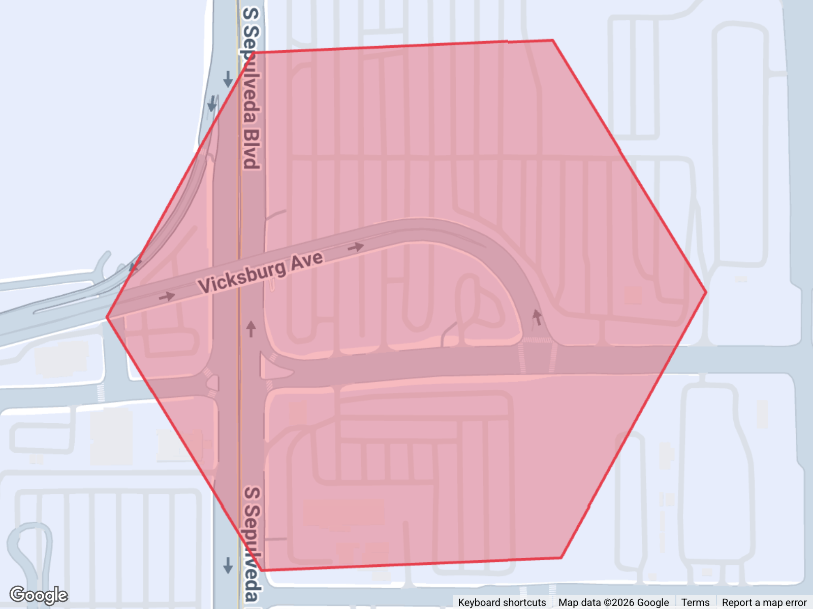
Single host home in Santa Monica. r ≤ 3 mi falls in tier 1 of Option A so we emit only one zone covering the entire circle (color: green = inner tier).
| Zone | res-9 | edge-aware (res 5–9) | full (res 5) | clipped-out |
|---|---|---|---|---|
| Inner ≤3mi | 626 | 218 | 110 | — |
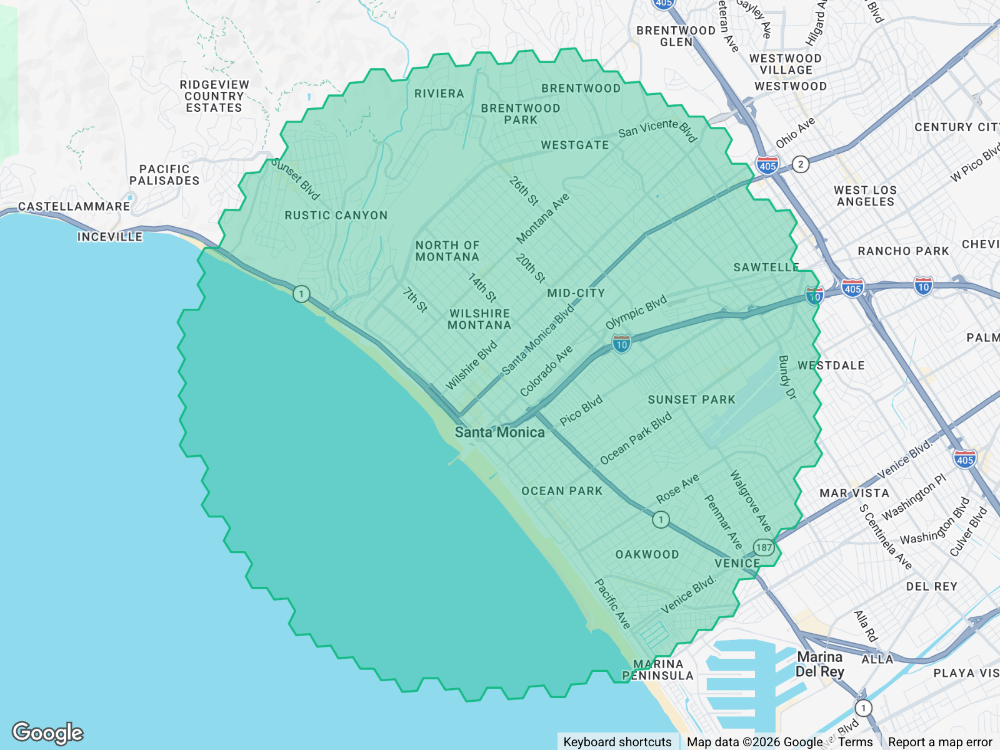
Same Santa Monica host with r ≈ 7 mi. Falls in tier 2 (3 < r ≤ 10) so we emit two concentric zones: the green ≤ 3 mi inner zone and the blue 3–7 mi outer ring. Reviewer takeaway: the migrator decides ring count purely from the legacy vehicle_custom_delivery_distance value.
| Zone | res-9 | edge-aware (res 5–9) | full (res 5) | clipped-out |
|---|---|---|---|---|
| Inner ≤3mi | 626 | 218 | 110 | — |
| Outer 3–7mi | 2775 | 753 | 465 | — |
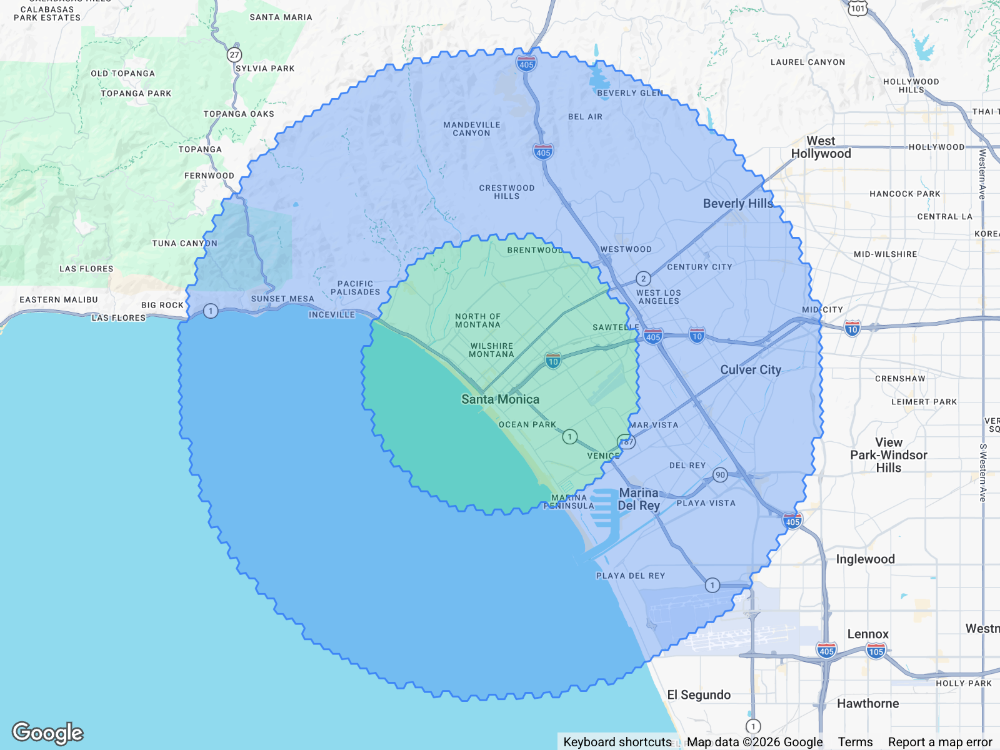
Same host, r ≈ 15 mi → tier 3 (r > 10) → three zones: green ≤ 3 mi, blue 3–10 mi, purple 10–15 mi.
| Zone | res-9 | edge-aware (res 5–9) | full (res 5) | clipped-out |
|---|---|---|---|---|
| Inner ≤3mi | 626 | 218 | 110 | — |
| Mid 3–10mi | 6318 | 990 | 612 | — |
| Outer 10–15mi | 8680 | 1918 | 1120 | — |
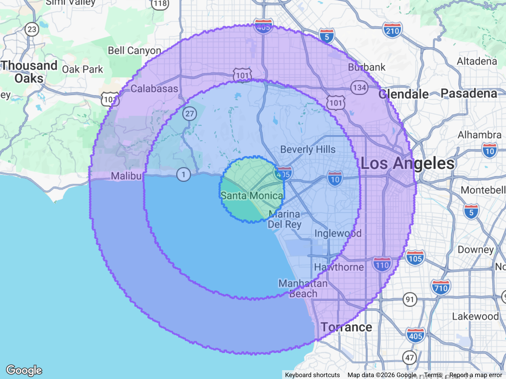
Same host as S4, but generated under Option B: one single zone covering the entire 15 mi disk regardless of radius. Compare cell counts to S4 to see the storage trade-off — Option B is one bigger zone, Option A is three smaller zones (which sum to roughly the same area).
| Zone | res-9 | edge-aware (res 5–9) | full (res 5) | clipped-out |
|---|---|---|---|---|
| Single 15mi | 15624 | 1152 | 678 | — |
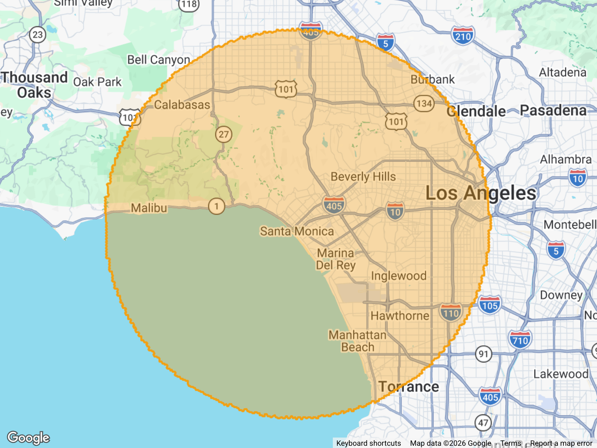
Pasadena host, r = 50 mi. Same Option A 3-ring layout as S4 but with the outer ring extending to 50 miles — this is the worst case for cell count and a good stress-test for §6.2 (ring splitting) and §5.4 (country clipping).
| Zone | res-9 | edge-aware (res 5–9) | full (res 5) | clipped-out |
|---|---|---|---|---|
| Inner ≤3mi | 622 | 214 | 106 | — |
| Mid 3–10mi | 6311 | 995 | 635 | — |
| Outer 10–50mi | 166502 | 4700 | 2924 | — |
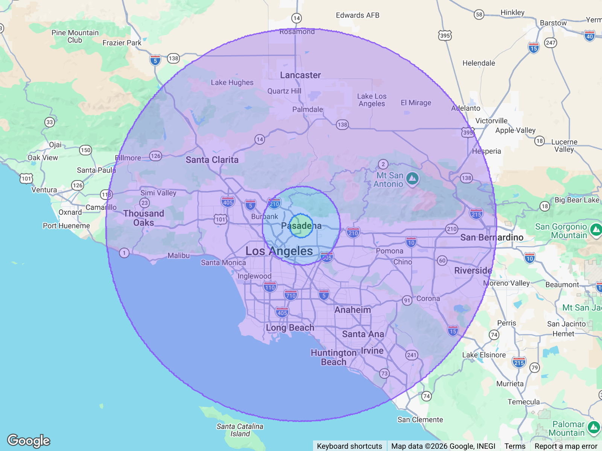
Same Pasadena host as S6, but Option B: one single 50-mile zone. Direct comparison to S6 — same area, different storage shape.
| Zone | res-9 | edge-aware (res 5–9) | full (res 5) | clipped-out |
|---|---|---|---|---|
| Single 50mi | 173435 | 3911 | 2405 | — |
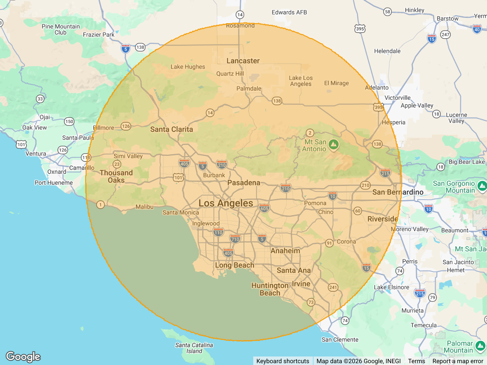
Small custom-delivery zone (~25 res-9 tiles, roughly a ½-mile disk in West Hollywood) chosen specifically so the carve-out is visible at this zoom. A hotel POI tile (red) sits near the center and is allocated first; with carveOutPriorZones=true the orange custom-delivery zone excludes that tile, producing a donut with the hole exactly one res-9 hexagon wide. This demonstrates the §6.2 contiguity rule: the resulting zone is still one polygon (donuts are allowed by validateHexConnectivity), so it migrates as a single zone. A carve-out that split the zone into multiple polygons would instead need to be migrated as multiple zones.
| Zone | res-9 | edge-aware (res 5–9) | full (res 5) | clipped-out |
|---|---|---|---|---|
| Hotel POI (carve-out) | 1 | 1 | 1 | — |
| Custom delivery zone | 24 | 24 | 24 | — |
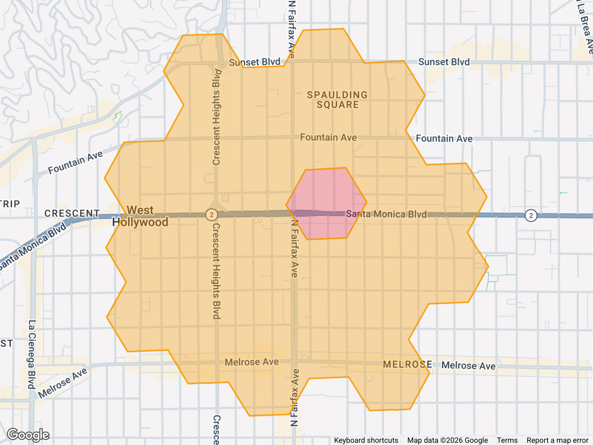
Two host homes ~5 mi apart (Santa Monica + Beverly Hills), each with a 2-ring bullseye. Home1 is allocated first; home2's circles have any cells already taken by home1 carved out. This produces visibly asymmetric home2 zones — exactly the §6.3 scenario, and the reason we recommend ordering hosts by something deterministic (e.g. earliest custom-delivery creation date) rather than letting concurrency decide.
| Zone | res-9 | edge-aware (res 5–9) | full (res 5) | clipped-out |
|---|---|---|---|---|
| Home1 inner ≤3mi | 626 | 218 | 110 | — |
| Home1 outer 3–7mi | 2775 | 753 | 465 | — |
| Home2 inner ≤3mi | 264 | 156 | 84 | — |
| Home2 outer 3–7mi | 1645 | 511 | 325 | — |
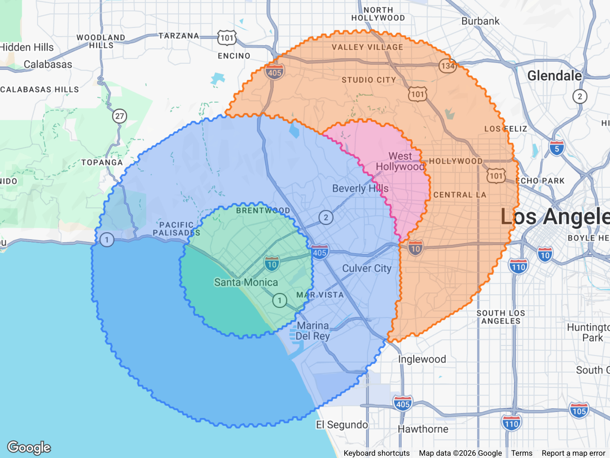
El Paso host, 50 mi Option A bullseye. Left: raw cells — note how the outer ring crosses the Rio Grande into Mexico. Right: after running each cell's center through the regional US polygon, all cells south of the border are dropped. The drop count appears under each ring as clipped-out. This is what §5.4's clipToCountry step would produce in the migration.
| Zone | res-9 | edge-aware (res 5–9) | full (res 5) | clipped-out |
|---|---|---|---|---|
| Inner ≤3mi | 596 | 212 | 122 | — |
| Mid 3–10mi | 5985 | 1023 | 567 | — |
| Outer 10–50mi | 158061 | 4623 | 2847 | — |
| Zone | res-9 | edge-aware (res 5–9) | full (res 5) | clipped-out |
|---|---|---|---|---|
| Inner ≤3mi | 382 | 160 | 112 | 214 |
| Mid 3–10mi | 3590 | 752 | 428 | 2395 |
| Outer 10–50mi | 98604 | 3870 | 2310 | 59457 |
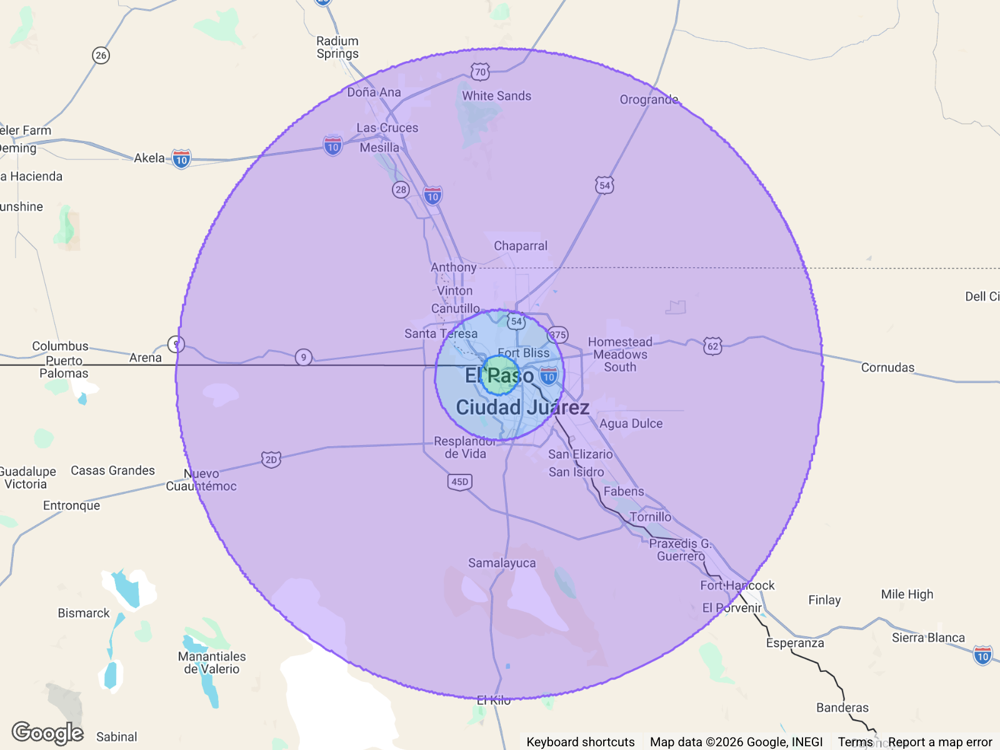
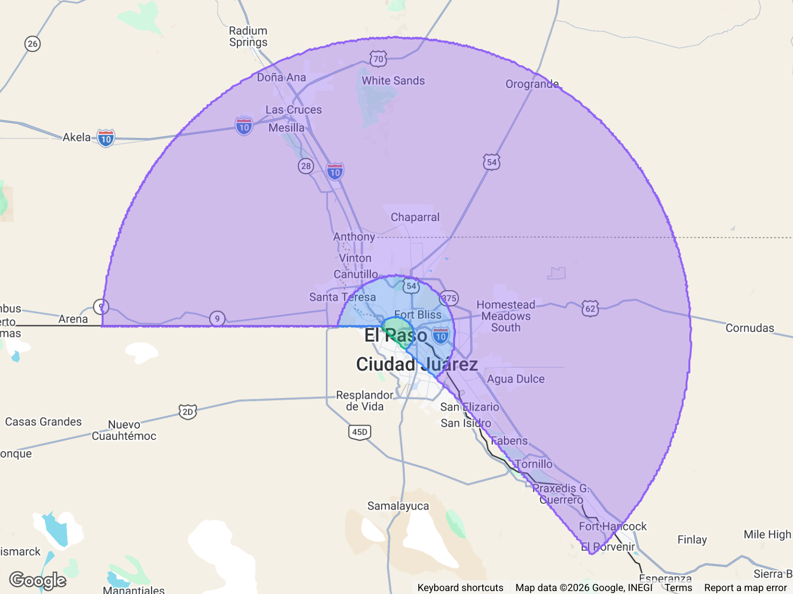